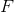
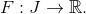
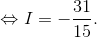
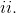

Metoda schimbării de variabilă
Prima metodă de schimbare de variabilă
Teorema CI38: Prima formulă de schimbare de variabilă
Fie intervalul  și funcțiile , având proprietățile:
și funcțiile , având proprietățile:
- funcția este o funcție derivabilă cu derivata continuă pe intervalul
- funcția
 este o funcție continuă pe intervalul
este o funcție continuă pe intervalul
Atunci avem următoarea formulă:
numită prima formulă de schimbare de variabilă.
Pașii care trebuie să îi urmezi atunci când dorești să folosești această formulă sunt următorii:
Se identifică funcțiile  și
și  ;
;
Se determină noile limite de integrare, și anume și  ;
;
Se calculează
Observații:
- Funcția se numește funcția care schimbă variabila.
- Formula se mai poate scrie și astfel: , unde  este o primitivă a funcției , definită astfel: 
- Notăm de unde, prin derivare, se obține Pentru
 obținem că iar pentru , avem că .
obținem că iar pentru , avem că .
Exerciții rezolvare:
- Să se calculeze
Rezolvare:
Conform pașilor descriși mai sus și a observației 3., avem:
.
Notăm
Derivând, obținem:
.
Pentru  , ne rezultă că .
, ne rezultă că .
Pentru  , ne rezultă că .
, ne rezultă că .
Atunci integrala noastră devine:

- Să se calculeze următoarea integrală:
Rezolvare:
Se recomandă ”substituția universală”:
Atunci avem:
Integrala devine:
![\begin{align*} I&=\int_{0}^{\frac{\pi}{3}}\frac{1}{1+\displaystyle\frac{2tg\ \displaystyle\frac{x}{2}}{1+tg^2\ \displaystyle\frac{x}{2}}}\ \mathrm{dx}\\\\ &=2\int_{0}^{\frac{\pi}{3}}\frac{\displaystyle\frac{1}{2}\left ( 1+tg^2 \ \frac{x}{2} \right )}{\left ( 1+tg^2\ \displaystyle\frac{x}{2} \right )^2}\ \mathrm{dx}\\\\ &=2\int _{0}^{\frac{\pi}{3}}\frac{{u}'(x)}{\big( 1+u(x) \big)^2}\ \mathrm{dx}\\\\ &=2\cdot \frac{\big(1+u(x)\big)^{-2+1}}{-2+1}\Big|_0^{\frac{\pi}{3}}\\\\ &=-2\cdot \frac{1}{1+tg\ \displaystyle\frac{x}{2}}\Big|_0^{\frac{\pi}{3}}\\\\ &=-2\cdot \left ( \frac{1}{1+tg\ \displaystyle\frac{\pi}{6}}-\frac{1}{1+tg\ \displaystyle\frac{0}{2}} \right )\\\\ &=-2\cdot \left ( \frac{1}{1+tg\ \displaystyle\frac{\pi}{6}}-\frac{1}{1+0} \right )\\\\ &=-2\cdot \left ( \frac{1}{1+\displaystyle\frac{\sqrt{3}}{3}}-1 \right )\\\\ &=-2\cdot \frac{3-3-\sqrt{3}}{3+\sqrt{3}}\\\\&=\frac{2\sqrt{3}}{3+\sqrt{3}}\end{align*}](../../media/webbooks/404/2698/images/equations/4mbwurvai_kjjjwrinxzlw==.gif)
A doua metodă de schimbare de variabilă
Teorema CI39: A doua formulă de schimbare de variabilă
Fie funcțiile , având proprietățile următoare:
- funcția este o funcție bijectivă; funcțiile și sunt două funcții derivabile, cu derivatele continue pe intervalul
- funcția este o funcție continuă pe intervalul
Atunci, avem formula:
numită a doua formulă de schimbare de variabilă.
Exercițiu rezolvat:
Să se calculeze integrala
Rezolvare:
Se alege funcția bijectivă și derivabilă: și funcția continuă
Funcția inversă este o funcție derivabilă cu derivata funcție continuă.
Având îndeplinite condițiile și  ale Teoremei CI39: ( A doua formulă de schimbare de variabilă ), putem aplica a doua formulă de schimbare de variabilă, și astfel avem că:
![\begin{align*} \int_{1}^{4}\frac{\sqrt{x}}{x+4}\ \mathrm{dx}&=\int_{1}^{4}f\big(u(x)\big)\mathrm{dx}\\\\&=\int_{x(1)}^{u(4)}f(t)\cdot {(u^{-1})}'(t)\ \mathrm{dt}\\\\&=\int_{1}^{2}\frac{t}{t^2+4}\cdot 2t\ \mathrm{dt}\\\\&=2\int_{1}^{2}\frac{t^2+4-4}{t^2+4}\ \mathrm{dt}\\\\&=2\left [ \int_{1}^{2}\frac{t^2+4}{t^2+4}\ \mathrm{dt}-\int_{1}^{2}\frac{4}{t^2+4}\ \mathrm{dt} \right ]\\\\ &=2\left [ \int_{1}^{2}1\ \mathrm{dt}-4 \int_{1}^{2}\frac{1}{t^2+4}\ \mathrm{dt}\right ]\\\\ &=2\left ( t\Big|_1^2-4\cdot \frac{1}{2}\cdot arctg\ \frac{t}{2}\Big|_1^2 \right )\\\\&=2\left [ \left ( 2-1 \right )-2\left ( arctg\ \frac{2}{2}-arctg \ \frac{1}{2} \right ) \right ]\\\\&=2\left [ 1-2\left ( arctg\ 1-arctg\ \frac{1}{2} \right ) \right ]\\\\&=2\cdot 1-2\cdot 2\left ( \frac{\pi}{4}-arctg\ \frac{1}{2} \right )\\\\ &=2-4\cdot \frac{\pi}{4}+4\cdot arctg\ \frac{1}{2}\\\\&=2-\pi+4\cdot arctg\ \frac{1}{2} \end{align*}](../../media/webbooks/404/2698/images/equations/ok7fdktpi3wwlljuh_wtca==.gif)